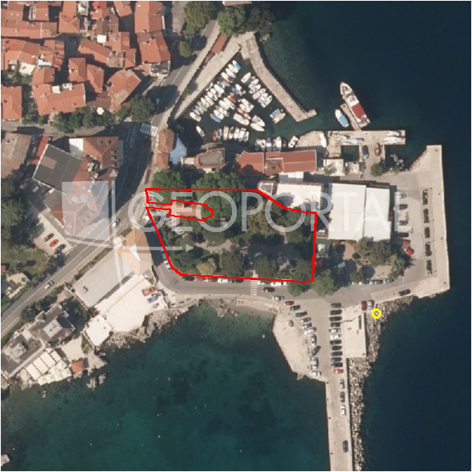

#13008 · LOVRAN, Kamena kuća sa pogledom na more
Lovran, Lovran, Primorsko-goranska · kuca · njuskalo · status active · oglas ↗
Ocjena
- Score
- 62 rule 62 · LLM – · 12.09.2026.
- RLV
- 1,44 M€ (822 €/m²) · ratio 5,23
- Ukupna investicija
- 3,75 M€
- GBP
- 1.400 m²
- Feedback
- –
- CRM
- –
Oglas
- Cijena
- 275.000 € (157 €/m²)
- Površina
- 1.750 m² · DKP 2.188 m² (odstupanje 25,0 %)
- Prodavatelj
- agencija · RE/MAX Centar nekretnina
- Prvi put
- 11.09.2026. · zadnje 11.09.2026. · 0 d na tržištu
Povijest cijene
| Datum | Cijena |
|---|---|
| 11.09.2026. | 275.000 € |
Flagovi
zop_70_100 ZOP pojas 70/100 m (−10)area_mismatch DKP površina odstupa > 15 % (−5)
zone_uncertainty zona nije pregledana (reviewed: false) (−5)
kuca_za_rusenje kuća za rušenje
rusenje_procjena površina objekta za rušenje pretpostavljena
llm_pending LLM ekstrakcija/ocjena nedostupna
Komponente score-a
| rlv | {'gbp': 1400.0, 'kis': 0.8, 'nkp': 1050.0, 'noi': None, 'rlv': 1438193.47826087, 'ratio': 5.229794466403164, 'value': None, 'phases': 1, 'profile': 'obala_visestambeno', 'gdv_neto': 5880000.0, 'cost_soft': 140450.0, 'gdv_bruto': 7350000.0, 'kis_known': False, 'total_inv': 3745850.0, 'cost_build': 2809000.0, 'cost_other': 504900.0, 'cost_sales': 220500.0, 'demolition': True, 'gbp_source': 'kis', 'rlv_per_m2': 821.8248447204971, 'parcel_area': 1750.0, 'parcelation': False, 'roi_on_cost': 0.5108720317150981, 'profit_at_ask': 1913650.0, 'cost_demolition': 9000.0, 'total_inv_phase': 3745850.0, 'parcel_area_effective': 1750.0, 'sale_price_per_m2_nkp': 7000.0} |
| hard | [] |
| info | ['kuca_za_rusenje', 'rusenje_procjena', 'llm_pending'] |
| rubric | {'permits': {'max': 5.0, 'detail': {'permit': 'none'}, 'points': 0.0}, 'location': {'max': 15.0, 'detail': {'source': 'rlv.yaml:pgz_opatija/row1', 'sale_price_per_m2_nkp': 7000.0}, 'points': 15.0}, 'physical': {'max': 4.0, 'detail': {'slope_pct': 14.63, 'slope_points': 1.537, 'sea_row1_bonus': True}, 'points': 2.54}, 'liquidity': {'max': 3.0, 'detail': {'n_cuts': 0, 'points_cut': 0.0, 'points_days': 0.008333333333333333, 'seller_type': 'agencija', 'points_fresh': 0.5, 'price_cut_pct': None, 'days_on_market': 1, 'points_private': 0}, 'points': 0.51}, 'rlv_ratio': {'max': 25.0, 'detail': {'rlv': 1438193, 'ratio': 5.23, 'asking_price': 275000.0}, 'points': 25.0}, 'ticket_fit': {'max': 10.0, 'detail': {'asking_price': 275000.0}, 'points': 7.33}, 'zone_quality': {'max': 8.0, 'detail': {'reason': 'zona nepoznata', 'source': 'nepoznato', 'zone_class': None}, 'points': 2.0}, 'profit_potential': {'max': 20.0, 'detail': {'roi_on_cost': 0.511, 'profit_at_ask': 1913650}, 'points': 20.0}, 'price_vs_benchmark': {'max': 10.0, 'detail': {'source': 'auto:Lovran', 'deviation': 0.343, 'ask_eur_m2': 157, 'benchmark_eur_m2': 239.34}, 'points': 9.43}} |
| weights | {'llm': 0.4, 'rule': 0.6, 'model': 0.0} |
| penalties | {'zop_70_100': 10, 'area_mismatch': 5, 'zone_uncertainty': 5} |
| raw_score | 81,8 |
| rlv_notes | ['DKP površina odstupa 25 % → koristi se oglašena'] |
| flag_notes | {'max_gbp': 1400, 'zop_band': '70', 'total_inv': 3745850, 'zone_code': None, 'zone_class': None, 'zone_source': 'nepoznato', 'zone_reviewed': None, 'area_mismatch_pct': 25.0} |
| caps_applied | [] |
GIS
- Čestica
- k.o. 319945, k.č. 50 (pin_buffer, 0,68); k.o. 319945, k.č. 58/1 (pin_buffer, 0,63); k.o. 319945, k.č. 47/1 (pin_buffer, 0,61)
- Zona
- – (–)
- kig / kis / katnost
- – / – / –
- GP / UPU
- – · UPU –
- Pristup / nagib
- unknown · 14,6 % (max 26,2 %)
- More
- 12 m · red 1 · ZOP 70
- Zaštite
- Natura ne · zaštićeno ne · kulturno dobro ne
- Zgrade na čestici
- 0 %
- Match
- 0,68
Karta
Ortofoto (DOF)

RLV kalkulacija — pretpostavke
| gbp | {'value': 1400.0, 'source': 'kis'} |
| kis | {'value': 0.8, 'source': 'default_profila'} |
| sea_row | {'value': '1', 'source': 'gis'} |
| soft_pct | {'value': 0.05, 'source': 'profil'} |
| nkp_ratio | {'value': 0.75, 'source': 'profil'} |
| cost_other | {'value': 504900.0, 'source': 'profil: doprinosi+uređenje po m² GBP, financiranje+rezerva % gradnje'} |
| parcel_area | {'value': 1750.0, 'source': 'oglas'} |
| asking_price | {'value': 275000.0, 'source': 'oglas'} |
| margin_on_cost | {'value': 0.15, 'source': 'profil'} |
| demolition_cost | {'value': 9000.0, 'source': 'profil × m²'} |
| existing_building_m2 | {'value': 150.0, 'source': 'pretpostavka'} |
| build_cost_per_m2_gbp | {'value': 2000.0, 'source': 'profil'} |
| sale_price_per_m2_nkp | {'value': 7000.0, 'source': 'rlv.yaml:pgz_opatija/row1'} |
| transfer_tax_and_acquisition | {'value': 0.06, 'source': 'profil'} |
Ekstrakcija iz oglasa
Benchmarks mikrolokacije
| Vrsta | Vrijednost | n | Od | Izvor |
|---|---|---|---|---|
| land_ask_eur_m2 | 239 | 68 | 11.09.2026. | auto |
Opis oglasa
Na odličnoj lokaciji u blizini mora i centra Lovrana prodajemo dvojnu autohtonu kamenu kuću sa velikom okućnicom i predivnim otvorenim pogledom na more. Kat kuće sastoji se od dvije spavaće sobe, kuhinje sa tornicom, kupaone i hodnika. U suterenu se nalazi konoba koja se dodatno može preurediti u stambeni prostor. Na velikoj okućnici nalazi se još jedna ucrtana starina koju je moguće urediti za stambeni ili neki drugi sadržaj. Odlična nekretnina sa velikim potencijalom u blizini mora. ID KOD AGENCIJE: 300421005-770 Andrea Mustać Prodajni predstavnik Mob: +385 91 641 3156 Tel: +385 51 551 871 Licenca: 21/2015 E-mail: a.mustac@remax-opatija.hr remax-centarnekretnina.com